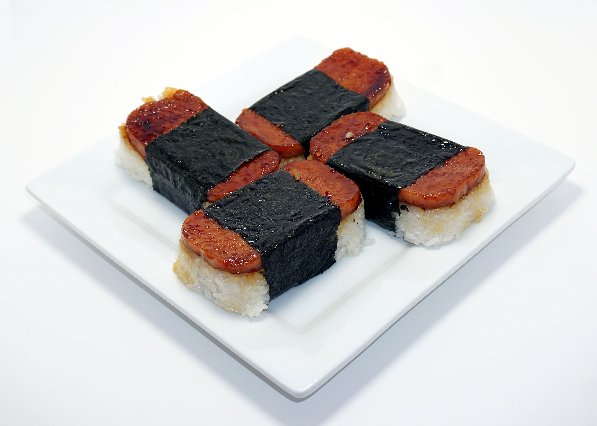

Spam Musubi

Description
An inexpensive and flavorful dish in the style of Japanese onigiri. A glazed slice of
pan-fried Spam sits atop a rice patty, wrapped in a piece of nori (seaweed). Ubiquitous in Hawai'i.
For
a twist, try the recipe with Hot & Spicy Spam-- the sweet heat can't be beat!
Ingredients
- 1 can of Spam, cut horizontally into 8 slices
- 2 sheets of nori, cut into fourths crosswise
- 2 tablespoons low sodium soy sauce
- 1/2 teaspoon mirin
- 2 tablespoons light brown sugar
- 1 to 2 teaspoons neutral oil, like canola or vegetable
- 2 cups cooked short-grain white rice
Steps
- In a small bowl, whisk the soy sauce, sugar and mirin. Set aside.
-
Lightly coat the bottom of a large skillet with oil and heat over medium. Fry the Spam slices until evenly
browned and crispy, 2 to 3 minutes on each side.
-
Turn off the heat. Working quickly to avoid burning, add
the soy mixture and turn the Spam slices until evenly coated in glaze. Immediately transfer the Spam slices
and glaze to a plate.
-
To mold the musubi, start by placing a strip of nori, rough side up, on a cutting board or clean work
surface. Place a Spam musubi maker mold over it, in the middle, then place a slice of Spam into the mold.
Fill the mold or can with a generous
mound of rice. Press the rice firmly with the musubi maker press or with your hands until it is 3/4- to
1-inch thick, adding more rice as needed.
-
Use the press to hold the rice down with one hand and pull the mold upward to unmold the musubi with your
other hand.
-
Wrap the nori around the Spam-rice stack, bringing both ends of the strip to the middle, folding one over
the
other, and flipping it over so the seam is down and the Spam is facing up. Repeat with remaining
ingredients.
Serve immediately or wrap with plastic wrap to take with you on the go.